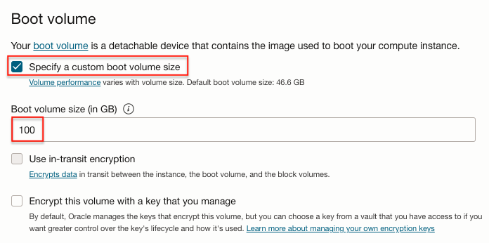
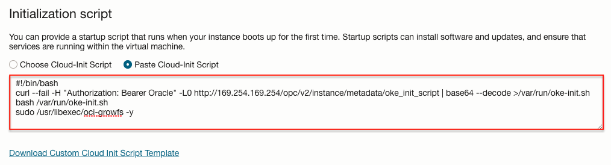

1.10.1 Worker Node 디스크 사이즈 늘리기
용량이 큰 컨테이너 이미지들을 사용하거나, 이미지를의 합계 사이즈가 큰 경우, 실행을 위해 컨테이너 이미지를 Worker Node로 가져오다 오류가 날수 있습니다. 이를 방지하기 위해 Worker Node의 디스크 사이즈를 다음과정을 통해 늘립니다.
Worker Node Boot Volume 사이즈 늘리기
-
Worker Node의 Boot Volume의 기본 사이즈는 50GB입니다. 클러스터 생성시 advance options 또는 Node Pool 설정화면에서 Boot volume 사이즈를 늘립니다.

-
Worker Node에 SSH로 접속하여, 디스크 정보를 보면 다음과 같습니다.
- sda의 사이즈는 늘어났지만, 실제 파티션된 볼륨 사이즈는 변경되지 않아, 45.5G로 전체를 다 사용하지 못하고 있습니다.
[opc@oke-c7fk4xxodaa-nk4a2kfionq-sfwfrelxbnq-0 ~]# sudo lsblk NAME MAJ:MIN RM SIZE RO TYPE MOUNTPOINT sda 8:0 0 100G 0 disk ├─sda1 8:1 0 100M 0 part /boot/efi ├─sda2 8:2 0 1G 0 part /boot └─sda3 8:3 0 45.5G 0 part ├─ocivolume-root 252:0 0 35.5G 0 lvm / └─ocivolume-oled 252:1 0 10G 0 lvm /var/oled -
루트 파티션을 확장할 수 있습니다. Extending the Root Partition on a Linux-Based Image을 참고하여 oci-growfs 명령으로 루트 파티션을 늘립니다.
sudo /usr/libexec/oci-growfs -y- 실행 예시
[opc@oke-c7fk4xxodaa-nk4a2kfionq-sfwfrelxbnq-0 ~]$ sudo /usr/libexec/oci-growfs -y Volume Group: ocivolume Volume Path: /dev/ocivolume/root Mountpoint Data --------------- mountpoint: / source: /dev/mapper/ocivolume-root filesystem type: xfs source size: 35.5G type: lvm size: 35.5G physical devices: ['/dev/sda3'] physical volumes: ['/dev/sda', '/dev/sda'] partition number: ['3'] volume group name: ocivolume volume group path: /dev/ocivolume/root Partition dry run expansion "/dev/sda3" succeeded. CHANGE: partition=3 start=2304000 old: size=95371264 end=97675264 new: size=207411167 end=209715167 Expanding partition /dev/sda3: Confirm? Partition expand expansion "/dev/sda3" succeeded. ... -
확장후 다시 조회하면, sda3의 사이즈가 98.9G로 늘어난 것을 볼 수 있습니다.
[opc@oke-c7fk4xxodaa-nk4a2kfionq-sfwfrelxbnq-0 ~]$ lsblk NAME MAJ:MIN RM SIZE RO TYPE MOUNTPOINT sda 8:0 0 100G 0 disk ├─sda1 8:1 0 100M 0 part /boot/efi ├─sda2 8:2 0 1G 0 part /boot └─sda3 8:3 0 98.9G 0 part ├─ocivolume-root 252:0 0 88.9G 0 lvm / └─ocivolume-oled 252:1 0 10G 0 lvm /var/oled
cloud-init을 사용하여, Worker Node 생성시 자동으로 확장하기
-
클러스터 생성시 advance options 또는 Node Pool 설정화면에서 Boot volume 사이즈를 늘립니다.
-
Worker Node 생성시 커스텀 cloud-init 스크립트를 실행할 수 있습니다.
-
문서상에 있는 디폴트 시작 스크립트에 oci-growfs 명령을 추가해 주면 됩니다.
#!/bin/bash curl --fail -H "Authorization: Bearer Oracle" -L0 http://169.254.169.254/opc/v2/instance/metadata/oke_init_script | base64 --decode >/var/run/oke-init.sh bash /var/run/oke-init.sh sudo /usr/libexec/oci-growfs -y -
클러스터 생성시 advance options 또는 Node Pool 설정화면에서 Initialization Script에 복사합니다.

-
추가된 내용으로 클러스터를 생성하거나, 기존 Node Pool인 경우 Worker Node를 재생성합니다.
-
생성된 Worker Node에 SSH로 접속해 cloud-init-output 로그를 확인하면, 추가된 스크립트가 실행된 것을 볼 수 있습니다.
$ cat /var/log/cloud-init-output.log ... Mon Jul 17 09:40:21 UTC 2023 Finished OKE bootstrap Volume Group: ocivolume Volume Path: /dev/ocivolume/root ... CHANGED: partition=3 start=2304000 old: size=95371264 end=97675264 new: size=207411167 end=209715167 Extending /dev/sda3 succeeded. Device /dev/sda3 extended successfully. Logical volume /dev/ocivolume/root extended successfully. Cloud-init v. 22.1-6.0.4.el8_7.2 running 'modules:final' at Mon, 17 Jul 2023 09:39:26 +0000. Up 23.69 seconds. Cloud-init v. 22.1-6.0.4.el8_7.2 finished at Mon, 17 Jul 2023 09:40:23 +0000. Datasource DataSourceOracle. Up 80.32 seconds -
cloud-init이 실행되어 루트 볼륨이 늘어난 것을 확인할 수 있습니다.
[opc@oke-c7fk4xxodaa-nk4a2kfionq-sfwfrelxbnq-0 ~]$ lsblk NAME MAJ:MIN RM SIZE RO TYPE MOUNTPOINT sda 8:0 0 100G 0 disk ├─sda1 8:1 0 100M 0 part /boot/efi ├─sda2 8:2 0 1G 0 part /boot └─sda3 8:3 0 98.9G 0 part ├─ocivolume-root 252:0 0 88.9G 0 lvm / └─ocivolume-oled 252:1 0 10G 0 lvm /var/oled
이 글은 개인으로서, 개인의 시간을 할애하여 작성된 글입니다. 글의 내용에 오류가 있을 수 있으며, 글 속의 의견은 개인적인 의견입니다.